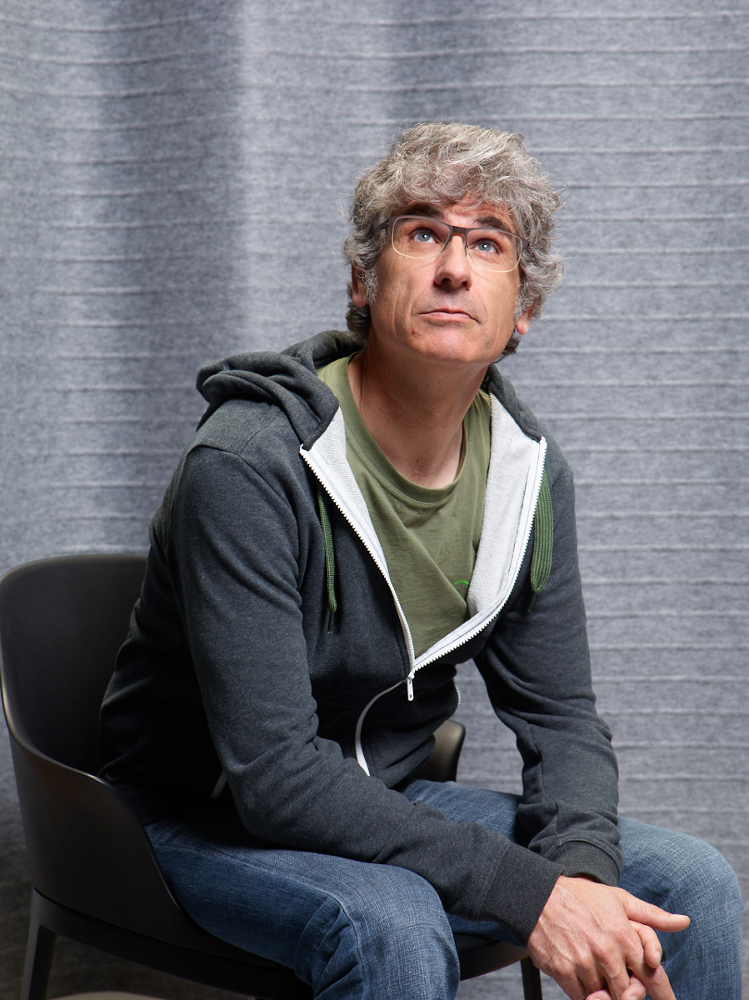
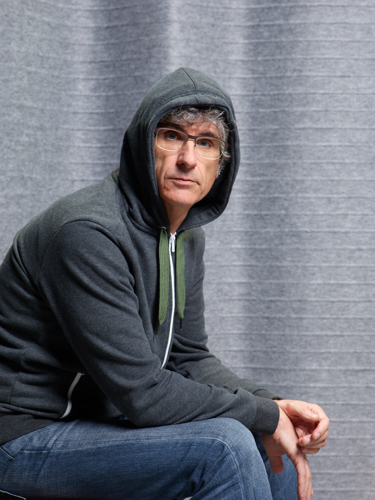

Portraits
Certaines photos sont libres de droit (Creative Commons by-nc), d'autres sont sous copyright et ne sont publiables qu'après négociation avec leur auteur. Cliquez sur les images pour obtenir les versions HD. D'autres photos traînent sur Flickr.
2022, par l'IA Vana (cc by-nc).

50 ans, 29 avril 2014, Genève par Federal studio (accord automatique - ref CF069793)

© Federal Studio - accord
automatique (ref CF069556)

50 ans, 29 avril 2014, Gevène par Federal Studio (accord automatique - CF069809)
50 ans, 29 avril 2014, Genève par Federal Studio (accord automatique - CF069874)

© Fabien
Clairefond du Figaro pour Nowe Media
50 ans, 11 avril 2014 (cc by-nc)


Creative Commons by-nc

Creative Commons by-nc

© Julien Linder


")
Creative Commons by-nc
")
Creative Commons by-nc

© cmicblog
")
Creative Commons by-nc
")
Creative Commons by-nc
")
Creative Commons by-nc
 - © Christian Roussellier")

Creative Commons by-nc
Sommaire | Texte publié jeudi 28 décembre 2006